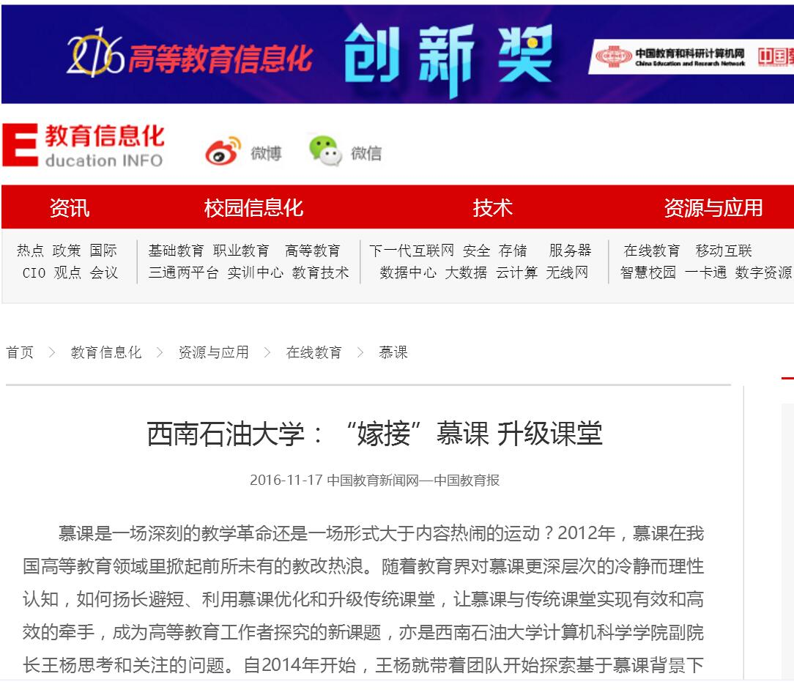

“嫁接”慕课 升级课堂

图1.中国教育报
来源：中国教育报
原文地址：http://paper.jyb.cn/zgjyb/html/2016-11/14/content_466281.htm?div=-1
2016年11月14日，中国教育报高等教育周刊改革探索版面在头条位置，以《“嫁接”慕课 升级课堂——西南石油大学开展“融合式”教学》为题，大篇幅报道我校计科院开展的大学课堂教学改革。
图2.中国教育和科研计算机网
来源：中国教育和科研计算机网
原文地址：http://www.edu.cn/xxh/zyyyy/mooc/201611/t20161117_1468618.shtml
图3.中国石油大学
来源：中国石油大学
原文地址：http://csun.upc.edu.cn/s/71/t/180/c4/62/info115810.htm